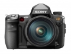

器材库 > 35mm画幅可换镜头数码相机 > α850

规格总览
产品类型
35mm画幅可换镜头数码相机
发布日期
2009-08-28
厂家推荐价格
2,000.00 （美元）
影像规格
影像传感器
CMOS
影像传感器尺寸
35.9 × 24.0mm
总像素
2570万
有效像素
2460万
影像处理器
BIONZ
色彩滤镜
RGB原色彩色滤镜
色彩空间
sRGB/Adobe RGB
最大解像度
6048×4032
静态图像尺寸
6048×4032; 6048×3408; 4400×2936; 4400×2472; 3024×2016; 3024×1704
静态图像格式
JPEG, RAW, RAW+JPEG
静态图像质量
JPEG标准，JPEG精细，JPEG超精细，RAW，cRAW(压缩)，RAW+JPEG(精细)，CRAW+JPEG(精细)
画幅比
3:2, 16:9
防抖系统
SteadyShot机身防抖
除尘系统
低通滤镜的防静电涂层和影像传感器位移装置
镜头和对焦
镜头卡口
Minolta/Konica-Minolta/Sony AF
兼容镜头
索尼镜头和柯尼卡美能达/MAXXUM/DYNAX镜头
对焦系统类型
TTL相位检测
对焦点
9点
对焦模式
AF-A/AF-C/AF-S/MF
AF辅助灯
有
手动对焦
支持
曝光控制
测光模式
中央重点测光, 评价测光, 点测光
测光范围
0EV~20EV
快门类型
机械控制，纵走式，焦平面快门
快门速度
1/8000秒 - 30秒，B门
曝光补偿
±3EV以1/3EV级调整
自动曝光锁
有
连拍
每秒3张，最多593/384张JPEG（标准/精细）或 34张JPEG（超精细）或16张RAW 或 18张cRAW（压缩）或 12张RAW+JPEG
闪光灯
外接闪光灯
HVL-F56M / HVL-F36M / Macro Twin Flash Kit HVL-MT24AM
取景器/显示屏
取景器
眼平五棱取景器, 固定
取景范围
98%
取景放大倍率
0.74倍
屈光度调节范围
-3.0 ~ +1.0
反光镜
快速瞬回半透明
景深预视
有
LCD类型
彩色TFT LCD
LCD尺寸
3.0英寸
LCD像素
92万
视野率
100%
亮度调节级数
±5级
文件输入/输出
存储卡
CF, MS/MS PRO记忆棒
数据接口
USB2.0
视频/音频接口
HDMI 输出, Video 输出 (NTSC/PAL)
支持打印协议
PictBridge, DPOF, PIM, EXIF Print
电源
电池
NP-FM500H
机身规格
材质
镁合金外壳
颜色
黑色
尺寸
156 × 117 × 82mm
重量
850g
其它
附件
锂电池NP-FM500H
备注
配置高速双Bionz影像处理器；内置Intelligent Preview功能；未在中国上市
口苗口苗2014-04-22 15:484.75 分
操作性 4.50功能性 4.50美观性 5.00趣味性 4.50耐用性 5.00性价比 5.00解像力 5.00色彩还原 4.50
我用美能达2014-03-22 10:365 分
操作性 5.00功能性 5.00美观性 5.00趣味性 5.00耐用性 5.00性价比 5.00解像力 5.00色彩还原 5.00
RX102013-10-02 16:414.56 分
操作性 4.50功能性 4.50美观性 5.00趣味性 4.00耐用性 4.50性价比 4.50解像力 4.50色彩还原 5.00
叽里咕噜2012-09-15 17:484.5 分
操作性 5.00功能性 4.50美观性 5.00趣味性 4.50耐用性 4.50性价比 4.50解像力 4.00色彩还原 4.00
烟龄三十年2012-08-23 14:044.75 分
操作性 5.00功能性 4.00美观性 5.00趣味性 5.00耐用性 4.00性价比 5.00解像力 5.00色彩还原 5.00
65152152012-04-14 22:374.94 分
操作性 5.00功能性 4.50美观性 5.00趣味性 5.00耐用性 5.00性价比 5.00解像力 5.00色彩还原 5.00
岳蓬2012-03-23 21:554.56 分
操作性 4.00功能性 4.50美观性 4.00趣味性 4.50耐用性 4.50性价比 5.00解像力 5.00色彩还原 5.00
dorados2011-11-21 16:044.69 分
操作性 4.50功能性 4.50美观性 4.50趣味性 4.50耐用性 4.50性价比 5.00解像力 5.00色彩还原 5.00
cityanimal2011-08-20 15:454.94 分
操作性 5.00功能性 5.00美观性 5.00趣味性 4.50耐用性 5.00性价比 5.00解像力 5.00色彩还原 5.00
soken2011-06-03 12:504.88 分
操作性 5.00功能性 4.50美观性 5.00趣味性 4.50耐用性 5.00性价比 5.00解像力 5.00色彩还原 5.00
chjlin882011-03-02 06:174.69 分
操作性 4.50功能性 4.50美观性 4.50趣味性 4.50耐用性 4.50性价比 5.00解像力 5.00色彩还原 5.00
产品图 / 样片
α850-01
评测 / 相关文章
- 详细内容 （存档）
- ［资讯］α850+24-70ZA 索尼的颜色主义 （存档）
- ［资讯］索尼09新款全幅α850海外评测 （存档）
- ［资讯］DxO Optics Pro推出升级版本V.5.3.5 （存档）
- ［资讯］索尼推出秋季单反新品 （存档）
相关文章
- ［资讯］α850+24-70ZA 索尼的颜色主义 （存档）
- ［资讯］索尼09新款全幅α850海外评测 （存档）
- ［资讯］DxO Optics Pro推出升级版本V.5.3.5 （存档）
- ［资讯］索尼推出秋季单反新品 （存档）
- ［资讯］索尼α850 （存档）